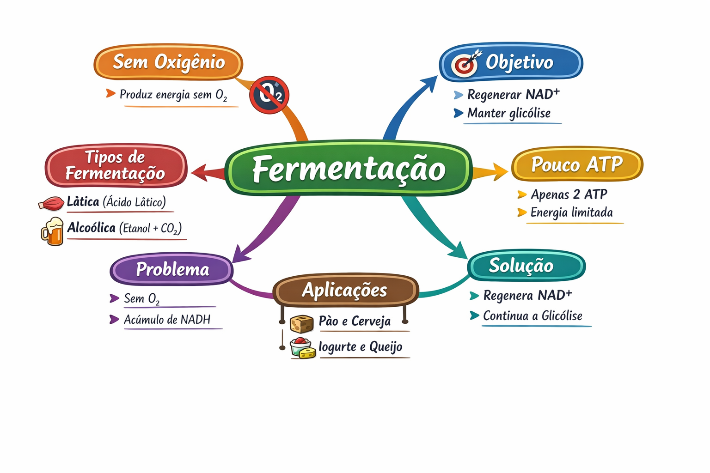

Energia sem oxigênio: o plano B da célula
Fermentação é um processo em que células produzem energia sem usar oxigênio, degradando moléculas orgânicas (principalmente glicose).
👉 Em termos simples:
quando não há oxigênio, a célula "improvisa" para continuar gerando energia.
Fermentação é um processo metabólico anaeróbico no qual a glicose é parcialmente degradada para gerar ATP, com regeneração de NAD⁺ a partir de NADH, permitindo a continuidade da glicólise.
👉 A fermentação sempre depende da glicólise, que gera:
- 2 ATP
- 2 NADH
👉 Diferente da respiração:
Antes da fermentação acontecer:
👉 Problema:
Sem oxigênio, o NADH não pode ser reoxidado normalmente
👉 Solução:
A fermentação regenera NAD⁺
Onde ocorre:
Características:
👉 Consequência: Sensação de queimação muscular
Onde ocorre:
Características:
👉 Aplicações:
A fermentação NÃO é um processo isolado:
👉 Ela existe para manter a glicólise funcionando
👉 Sem fermentação:
| Característica | Fermentação | Respiração |
|---|---|---|
| Oxigênio | Não usa | Usa |
| ATP | 2 ATP | ~36 ATP |
| Degradação | Parcial | Completa |
| Produtos | Orgânicos | CO₂ + H₂O |
Fermentação = emergência energética
Respiração = eficiência máxima
Quantos ATP são produzidos na fermentação?
Por que a fermentação é necessária?
1. O que é fermentação?
2. Qual o papel do NAD⁺?
3. Onde ocorre a glicólise?
4. Por que a fermentação é menos eficiente?
5. Explique a relação entre NADH e NAD⁺
6. Compare fermentação lática e alcoólica
7. Explique por que a falta de O₂ afeta a produção de ATP
8. Relacione fermentação com metabolismo celular
9. Analise o impacto da fermentação em ambientes anaeróbicos
1. Modele a fermentação como sistema de controle de NAD⁺
2. Explique por que a glicose não é totalmente degradada
3. Compare eficiência energética com base em ligações químicas
Vias alternativas
Etapas iniciais
Produção de ATP
Reações enzimáticas
Ambientes anaeróbicos
Fermentação é um mecanismo de sobrevivência energética:
👉 Não é o melhor sistema
👉 É o sistema que mantém a vida funcionando quando tudo falha
Explique com suas palavras:
👉 Por que a fermentação é necessária mesmo produzindo tão pouco ATP?
Se você não conseguir explicar claramente, volte e revise.
(Flip Card)
A fermentação não é sobre produzir muito ATP, mas sim sobre regenerar NAD⁺.
Sem NAD⁺, a glicólise para completamente e a célula morre por falta TOTAL de energia.
2 ATP é melhor que 0 ATP!
Diagrama completo da fermentação para estudo

Clique no botão acima para fazer o download da imagem em alta resolução.